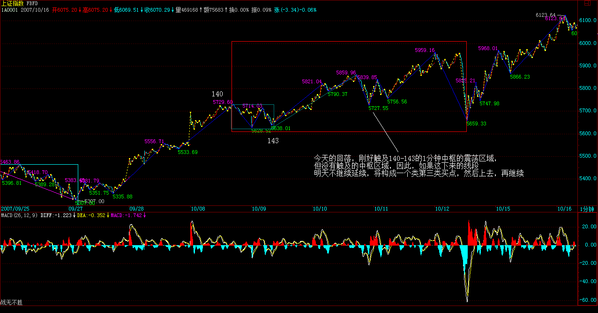
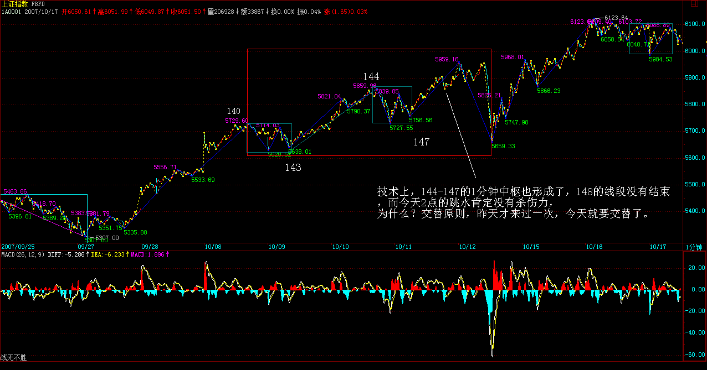
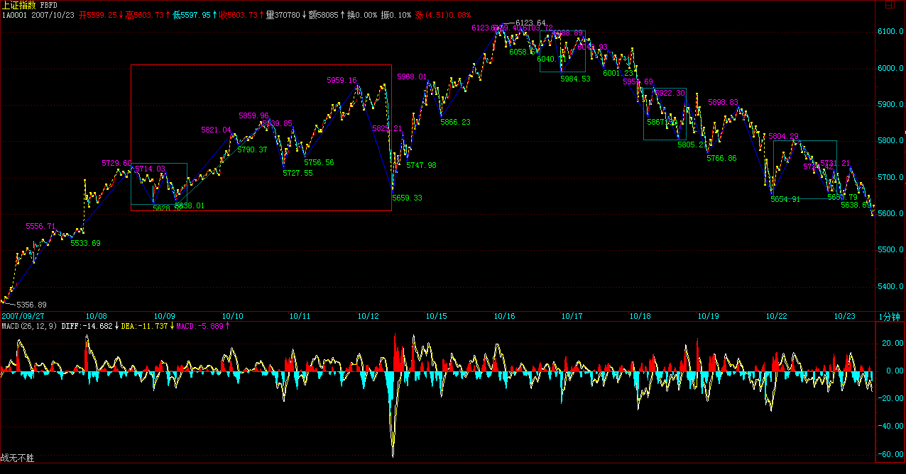
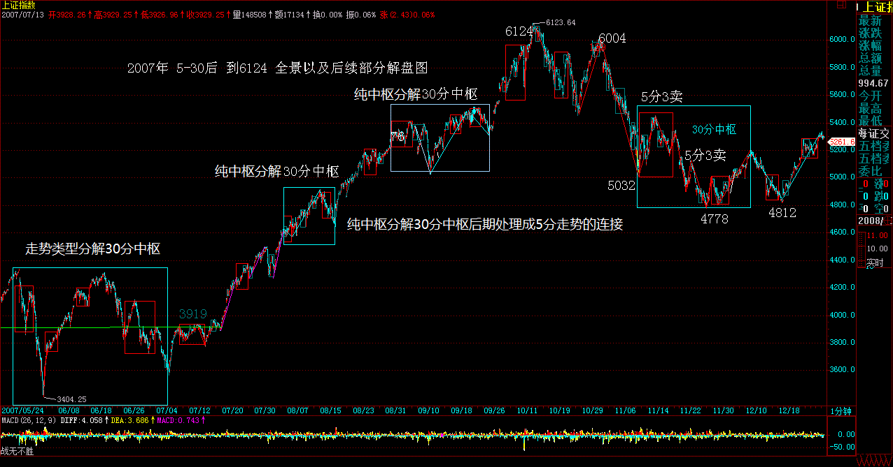
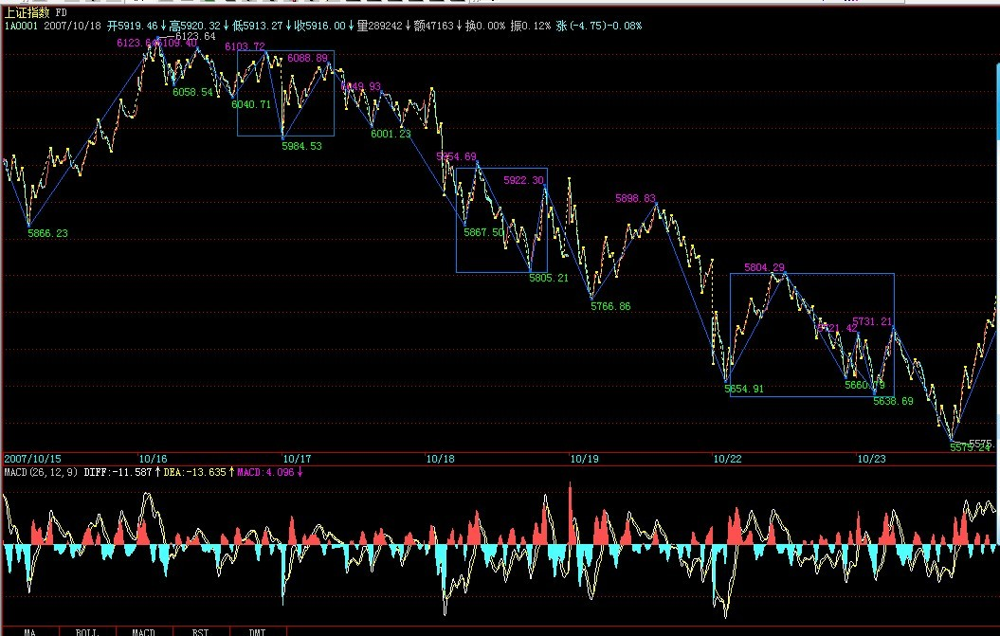
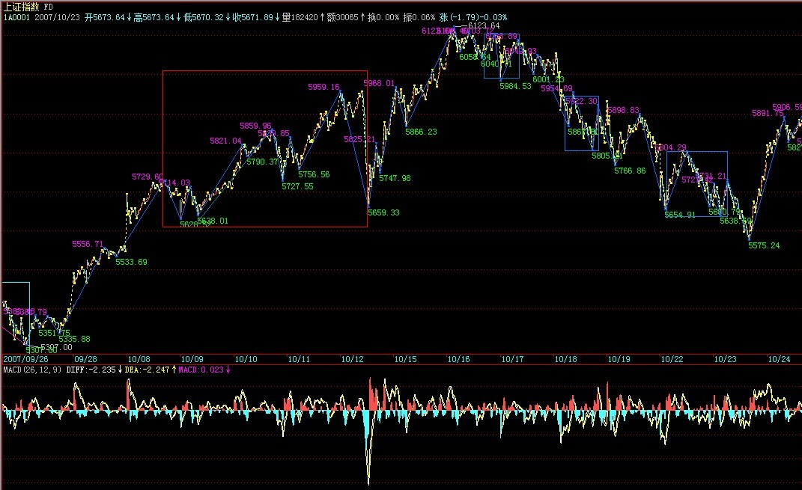

|
 |
教你炒股票84：本ID理论一些必须注意的问题
(2007-10-07 16:09:06)
股票走势，归根结底是不可复制的，但股票走势的绝妙之处就在于，不可复制的走势，却毫无例外地复制着自同构性结构，而这自同构性结构的复制性是绝对的，是可以用本ID的理论绝对地证明而不需要套用任何诸如分形之类的先验数学理论。这种同构性结构的绝对复制性的可绝对推导性，就是本ID理论的关键之处，也是本ID理论对繁复、不可捉摸的股票走势的绝妙洞察之一。注意，自同构性结构，在前面不太精确地用了自相似性结构之类的词语，这很容易和数学里的分形以及利用这种先验性理论构造的理论中的一些术语相混淆，所以以后都统一为自同构性结构。
而正因为有了自同构性结构，所以股票走势才可以被技术所绝对分析。而任何有效的技术分析，本质上都是本ID理论的分支，本ID还没看过任何有效的股票操作程序，是外于本ID理论的。
最近似乎很多人举出很多书，说这也和本ID的相通、那也和本ID的相通。其实，这就如同说欧几里德之前或与之独立的，就有很多人知道勾股定理，但那是欧几里德的几何吗？而且，更重要的是，本ID依然没看过任何一本书，达到勾股定理的那种程度，就更不用说欧几里德几何的本ID理论。本ID建议，除了了看本ID的理论，一定要多看别人的，这样才会有比较，本ID的理论不仅集所有技术分析理论的大成，更重要的是，本ID理论完全构建在不同的思维框架下。这就如同中印的古代几何都很牛，但真正逻辑化、推理化、系统化、理论化的是欧几里德的，这是一种完全不同的数学路线，不明白这个，那肯定白学了。
所以，学本ID的理论，一个很关键的一点，就是要找出所有技术分析以及操作程序在本ID理论领域中的具体位置，由于本ID的理论对于任何技术分析以及操作程序具有一个绝对的视角，由此，可以绝对性发现所有分析与程序的优劣与缺陷。
注意，可能会发现，本ID理论中的有些结论，似乎和别的一些理论有类似的地方，这恰好证明了本ID理论的涵盖面。例如，本ID的理论，可以解释波浪理论里一切的细节以及不足之处，但反过来不可能，因为本ID理论是一个更广阔的理论，波浪理论不过是一个有着巨大缺陷的不成熟理论。
同样，可能在其他人的理论中，也有对K线组合定义类似分型的概念，但那些定义，都不过和一般的K线分析一样，是通过某种经验性的归纳而来，而本ID的分型定义，源自K线组合的一个完全分类，是一个纯理论的推导。正因为如此，本ID理论与其他任何理论相比，都有着绝对性与涵盖性，这一点，在以后的课程中会逐步揭示的。
走势的不可重复性和自同构性结构的绝对复制性以及理论的纯逻辑推导，这就构成了本ID理论视角的三个基本的客观支点，不深刻地明白这一点，是很难有真正的理解的。
走势的不可重复性，决定了一切的判断必须也必然是不可绝对预测的；自同构性结构的绝对复制性，决定了一切的判断都是可判断的，有着绝对的可操作性；理论的纯逻辑推导，就证明其结论的绝对有效性。
本ID的理论，是人类历史上第一次用100%理论推导的方式绝对地证明了走势分解的唯一性，这从上面关于笔、线段等分解的唯一性证明就明白，世界有哪种交易理论，是按这种绝对推理的方式构成的？显然没有，这才是本ID理论的最强大力量所在，前两个客观点如果没有最后这第三点，都是瞎掰。
其实，这三点，又何止是与股票走势相关，真明白了，对你的人生与社会操作，有着同样的意义。每个人的生活，世界的变化，诸如此类，本质上，离不开这走势的绝对不可重复性和自同构性结构的绝对复制性以及相应不患的共业的绝对推理性。
什么叫革命？就是打破某种自同构性结构的绝对复制性以及相应不患的共业的绝对推理性。知道为什么本ID说“列宁式社会主义是一个基于民族主义的策略性误读，是一个反资本主义的资本主义过程”吗？就是本质上，资本主义所具有的绝对复制性的自同构性结构从来没被打破过，这种自同构性结构就如同瘟疫，必然全球化，必然一统江湖地忽悠化，这是其不患的共业。由此，就不难理解马克思关于社会主义必然是一个全球事件的意义所在，在资本主义都没全球化之前谈论社会主义，那社会主义，一定不是马克思意义上的。
看资本主义的必须崩溃，就如同看一个日线上涨走势的必然完结一样，本质上没有任何区别。马克思，如同本ID一样，多空通杀。反马克思者如同那些疯狂做多的多头，反资本主义者，如果那些疯狂做空的空头，他们之间的合力，就构成了资本主义的走势本身。这走势，可能不断地中枢上移，但这走势的结束，是可以精确地判断的，其判断的标准，就是背弛，整个社会大结构的背弛。现在，资本主义还在全球化中大发展，哪里有什么背弛的迹象？
但是，正如本ID所说的，多空通杀地去阻击任何的走势，资本主义的上涨，同样是可以阻击的，这方面的内容，以后在捍卫马克思系列里慢慢说。
任何阻击的关键，就是多空通杀地去壮大自己。任何一根筋思维的人，是永远不会明白这个道理的。当然，也没必要让他们明白，否则，没有一根筋思维的人，哪里去找通杀的对象？多头、空头，最终都不过是被杀的猪头。
多空通杀，不是根据自己的喜好，而是如一个零向量那样当下于走势的合力之中。零向量，加多少，都不会改变走势合力丝毫，这样，才能真正去感应市场合力本身，感应其转折，感应其破裂，在电光火石的一下中出手，如风行水，如电横空。不思多、不思空，如零向量般与合力随波逐浪，才可能最终盖天盖地，多空通杀。
所以，最终，比的是人本身。就如都是玩独孤九剑的，和那些所谓五岳剑派的玩，当然见一个搞废一个。但如果最终同玩独孤九剑了，那就要比人本身了。本ID的理论的一章，就是不断的修炼，最终能到什么层次，最终是玩小资金还是大战役，都只能与此相关。但这还不够，光是所谓身心的修炼，只不过是鬼窟里活计，你的身心，非你的身心，所以为你的身心，从此开始，才可以百尺竿头更进一步。
看走势的背驰、转折，不过是第一层次的东西，哪天，能看明白社会经济、政治等等结构的背驰、转折，那才是更高层次的东西。
自从结构与解构哲学的流行，用结构的观点观察，就是一个最基本的思维方式，但问题的关键，很多所谓结构性的思维，不过是一种归纳性的结果，不具有任何的理论系统性与有效性。
这里，本ID必须强调一次，分型与分形有着本质的不同，本ID所说的分型，是建立在一个K线组合的纯粹分类的基础上，任何与这个纯粹分类不同的，都必然是错误的，这一点必须明白。至于所谓的分形，当然也可能是一种结构，但这种结构，本质上都是归纳性的、因此都必然是有缺陷、划分不唯一的，和在一种完全分类基础上给出的绝对结论，有着本质的区别。
其次，分型只是中枢与走势级别递归定义的一个启始程序，甚至可以说，并不是本ID理论中必然需要的东西，其目的，不过是为了中枢等的递归性定义中给出其最开始的部分，完全可以用别的定义去取代。例如，我们可以用收盘的价位去定义顶分型、低分型结构，也可以用成交量给出相应的递归开始部分，只要能保证分解的唯一性，就可以。
本ID关于中枢等的定义，其实一直没有改变过，因为中枢定义的关键，在于定义的递归性。一般的递归定义，由两部分组成，一、f1(a0)=a1；二、f2(an)=an+1；关于第二条的中枢过程规则，是一直没有任何改变的，而关于第一条，其实，可以随意设置任何的，都不会改变中枢定义的递归性。而且，任何有点数学常识的都知道，f1(a0)=a1之前是不需要再有什么递归性的，也就是，一和二之间的f1、f2可以是完全不同的两个函数。
有些人一直还搞不清楚中枢，就是一直都搞不清楚这点。例如，可以用分型、线段这样的函数关系去构造最低级别的中枢、走势类型，也就是一中的a1，而在二中，也就是最低级别以上，可以用另一套规则去定义，也就是有着和f1完全不同的f2。这个问题其实太简单了，有点数学常识都不会有疑问，所以这问题，以后就不再说了。
至于MACD的辅助判别，已经反复说过多次，关键不是MACD，而是走势的分解，这才是关键。如果MACD真有用，那光用MACD就可以，连这问题都没解决，那前面的课程是白学了。
另外，必须再给一种错误的想法敲打一下。级别，本质上与时间无关，级别也不是什么时间结构。级别，只是按照本ID的规则，自生长出来的一种分类方法。而所谓的时间结构，本质上和电脑软件上的K线时间周期选择一样。一个最低级别不到的走势类型，可以生长100年不长成更高级别的，级别与时间，本质上没有太大的关系。级别的关键，就是本ID设计的那套规则。级别，本质上不对任何时间结构有任何绝对的承诺，为什么？因为这里没有任何的绝对的理论推导可以保证这一点，级别被破坏了，就是因为被破坏了，只此而已，并不是因为有什么时间的因素、结构就被破坏了。
还有一个更大的误解，有人见本ID整天说当下，那当下就最重要了。这是绝对的误解。当下之所以被反复提出，就是因为有人企图预测的想法太过根深蒂固，只是一种破的手段。能当下，那只是第一步，而真正要破的，正是当下本身。现在，有很多学口头禅的，整天忽悠什么活在当下，而所谓过去心不可得、现在心不可得，未来心不可得，又有什么当下可得？
学了本ID的理论，去再看其他的理论，就可以更清楚地看到其缺陷与毛病，因此，广泛地去看不同的理论，不仅不影响本ID理论的学习，更能明白本ID理论之所以与其他理论不同的根本之处。本ID看到有人提到《混沌操作法》和《证券新时空》，这样，新的作业就有了，就是如果有时间，请好好研究，然后用本ID理论的眼光，去发现其理论的重大问题与操作程式上的致命毛病。如果你能完成这作业，那么对本ID理论的理解，就更进一步了。
更重要的是，为什么要去了解其他理论，就是这些理论操作者的行为模式，将构成以后我们猎杀的对象，他们操作模式的缺陷，就是以后猎杀他们的最好武器，这就如同学独孤九剑，必须学会发现所有派别招数的缺陷，这也是本ID理论学习中一个极为关键的步骤。
教你炒股票84：回复
与大棒争分夺秒
(2007-10-08
15:35:47)
今天的走势，完全在理所当然之中，节前，在纯技术的角度已经对节后走势进行明确的分析，就是先完成139开始这一线段，然后再完成137开始的线段的类上涨，然后就是1分钟中枢的形成，走势如此正常地按本ID理论所框定的节奏走，所以也没什么可说的了。（今天图就不要帖了，没有任何新的标记）
唯一可说的就是，大盘的走势特别强，所以当今天收盘，139开始的线段依然没有完全确认已经走完，当然，按正常的情况，明天只有一开盘跌破5685点，这140的线段标记就可以弄上去了。然后，一般情况下，接着的1分钟中枢，基本就在目前这个范围上下形成，所以，今后几天，大盘走势如果出现大的震荡情况，是没有任何可值得大惊小怪的。
政策面上，那重要的会议后，调控力度必然加大，这是毫无疑问的。因此，周末开始，就进入政策面的危险时间，至于这个时间如何被触发，就看今后几天资金的表现了。对于资金来说，现在是争分夺秒。
至于下面的几个缺口，只是为后面的下跌留下动力。本ID前面已经明确说了，没有1000点的回跌空间，大盘就没有跌的价值。把回跌的空间拉回来，这就是目前走势的关键。
站在中线角度，只要大盘的回跌不破4335点，那么中枢的中线上移就依然保持。所以，目前大盘的上拉，中线的角度就在于，尽量让后面的回跌在最恶劣的情况下也不碰4335点。站在这个角度，目前的上涨确实还不够，但政策是否留下足够的时间让这空间给拉出来，这就不是任何人能打包票的了。
站在中长线的角度，12月是2005年6月上来的30个月，所以，从10月开始，就进入一个标准的时间压力区域，这时候一旦出现政策性共振，其杀伤力不容忽视。
总之，一句话，耐心等待较大级别卖点出现。在本周末之前，如果担心政策压力的，应该把仓位进行调整。目前走势下的中期顶部，不可能是市场自身走出来的，一定会有政策的背影。
现在唯一不太配合的，就是上冲力度还太小，回跌的空间还没有完全打开，和政策争分夺秒把空间拉抬出来，就是目前资金最大的任务。
个股方面，指标股拉动后，会有轮动，如果你对自己的技术有充分信心，可以关注这轮动。但注意，一定不要追高，本ID最不喜欢回答诸如明天还能不能买600078之类的问题，别股票涨起来才关注，那是一个天大的毛病，本ID还专门给作业各位分析该股回跌时的走势，买点怎么可能在上涨中形成？
股票操作其实很简单，就是一个节奏问题。但很多人，包括很多所谓的专家，都喜欢让人突破后追股票，这种人，永远只能是散户一个。
放假后有很多事情要处理，周末还要去某某会一把，要准备些东西。抱歉，不能回答问题了。 先下，再见。
3600点满江红后首次宣布中期做空
(2007-10-08 21:46:52)
7月初，在3600点下，本ID严正宣布要做多，不允许行情按汉奸的方式运行到2000点去，为什么？因为任何跌破3100点的走势都将导致2年多以来的中枢上移趋势被破坏。
今天，本ID开始宣布，从3600点开始的做多以及持有程序将开始终结，本ID将开始选择性地展开中期做空程序。这里，说明其中的理由。
一、长期牛市的大格局没有改变，但长期牛市并不排除期间的中期调整，以前，所有关于调整的时机都没有完全配合，而现在，这个时机已经逐步成熟。
二、本ID在博客里明确提示政策风险的是“冲动的惩罚，基金将成为毁掉市场的那只手2007-08-27
20:45:41”，原因很简单，因为当时有些可能的突发事发生，那时刚好在5200点上下，在电光火石中，一场大动荡被化解，当时的微妙，后来应该也有不少人有所耳闻了。
三、但当时，做空的条件不成熟，关键是政策面上有不协调的地方，而技术与资金上，一时还转不过来，特别是，没有足够的下跌空间，因此，后面的一个月的震荡，实际上都没超过6%的空间，这就是一个稳定与转换的过程，这样，不至于让资金如530一样措手不及。
四、目前，政策面上已经不是一方面或一个人的事情了，可以断言，不光针对股市本身，针对经济本身，也将出台更加严厉的政策，原来适度的口径，极有可能继续收紧。而针对股市的，本ID一度希望股市自身调节而不至于被迫出来的政策，也有可能不可逆转了，因此，政策面的压力已经逐步成熟，如果说8月28日只是一叶知秋，那么，在可见的将来，秋天就不需要去知道了，就在眼前。
五、技术上、资金上的松动已经开始发生，这时候，一些适当的引导，就可能发生一些有效的反应。市场是合力的，但合力是由分力开始的，如果3600点的分力曾经起作用，那么，一个新的剧本，也需要开始排演了。
六、现在唯一不配合的，就是回跌的空间还不足够，如果现在已经突破6100点，那更好。因为这次回跌，本ID并不希望破坏2005年上来的中枢上移格局，因此，这次的中期顶部阻击，会采取一种反复折腾、诱敌深入的模式，而不是如3600点那样，一下搞掂。
七、本ID曾经说过，如果快速突破3/4线，将开始阻击。后来因为大盘回跌5000点后一直盘整，所以曾说只要6100点不被快速突破都可以忍受。但现在看来，政策留给的空间已经越来越少，而今天又第一天突破3/4线，已经开始达到本ID对3600点开始行情的最低目标，任何的回跌，本ID都没有任何遗憾了。而能否到6100点，本ID已经没有这个顾虑了。
八、本ID只把自己的操作说出来，没有任何指导的意义。就像3600点的做多，然后一路的持有。现在，本ID只是准备改变中线的操作策略，没什么大事。本ID有可能错了，但本ID说了，就要干。
九、长线行情，本ID依然坚定看好，只是这政策、资金、技术所制造的中线调整，本ID也希望再3600那样玩上一把，如此而已。
十、做空的风险比3600点做多小多了，头部和3600点的底部一样，是合力的，但也是由一分力开始干出来的，本ID就再做一次那分力吧。
十一、别以为做空就是砸，那是最笨的手段，做空的本质，就是让多头自相残杀，因此，做空开始的时候，经常要比多头还要多头。
十二、底部不是一天构成的，顶部也是，一切的构造，都是在逼近那资金、技术、政策的共振点。然后，一切在无声中败落，如那一片片的黄叶。
给散户的中期建议
(2007-10-09 08:03:06)
注意，昨晚，本ID只是表明自己的中期态度与操作。但就算本ID，也要遵循本ID的理论。本ID只是分力之一，分力如何最终引导出合力，这就是本ID要干的事情。但并不是说一定就一天就能干成。
请回忆一下3600点，一长阴一长阳的空头陷阱，然后在3900点下坚守出底部突破来。那么这次，并不一定就是上次的倒影，手法当然不可能一样的。如何用一个分力引导出合力，这本来就是本ID理论中一个比较高级的课程。
这个课程能完成的关键，就在于技术、资金、政策的共振点的制造，这里学问不少，但实际中能否成功，关键还是看这几方面的调配点上的把握上。这就如同三个不同方向不同速度的网球，在空中于一点中相会，例如政策这个网球，就不是任何人能控制的，唯一能调节的，就是技术、资金等的结构关系，这里就需要有一个分力出来折腾。底部、顶部都是折腾出来的，折腾需要时间，最终走出相应的形态，然后坚持，最后突破。当然，做空的时候，就是跌破了。
所以，这是一个大的过程，并不是一天就要完成的。但如果政策配合，这个过程可以相当简洁。这次，本ID之所以主动反空，就是不希望再如530那次一样，让技术、资金去配合政策，而是玩一次这样的游戏，让政策去配合技术、资金。这如同先把两个网球的交点先给制造出来，然后让那政策的网球刚好碰到该点，这里的难度有多大，可想而知。
但这种游戏，才有玩的趣味。
站在本ID理论的角度，本ID只是分力，而散户只需要知道最终的合力如何，然后根据该合力去决定自己的进出，其实根本不需要太关心本ID的态度。
一般的散户要进要出，1秒种就可以搞掂，还是耐心等待大卖点的出现。当然，如果你觉得自己没那本事、没那心态，那就逐步分批退出，或者把仓位降到发生任何情况都可以睡着的程度。
如果本ID的行动能最终制造出大级别卖点，那么，本ID就游戏成功，否则本ID就被继续的多头夹空了。当然，如果那时候政策出现新的多头走向，那也不存在夹空的问题，本ID完全可以进入新的板块，或者反手做多。当然，目前没有任何迹象表明政策有转多的可能，上面这只是理论中完全分类的情况，基本没可能出现。
说白了，本ID之所以高调告诉各位，更重要的原因，是希望各位如3600点那样，去体会合力与分力的关系，以及在更高层次上，如何实际分力去合力的引导。不管这次本ID成功与否，都是一个最好的现场教材。
这用N多资金、筹码画出来的教材都不看，那就去看股评去吧，没必要学任何东西了。
板块如期轮动
(2007-10-09 15:26:41)
今天，如期出现昨天说的板块轮动，现在，无论多头空头，都需要这个轮动出现。对于空头来说，板块风烟四起，正是消耗多头能量的一种手段。如果一旦出现所有板块都轮动，但没有任何板块能连续上涨的情况，那对多头信心就是一个有力的打击。
昨晚已经说了“做空开始的时候，经常要比多头还要多头”，四处点火，那多头那点柴给烧没了，这就是做空程序的第一步。但多头不会一下死的，必须反复折腾，今天，在技术上，并不必然今天出现的一分钟中枢今天出现了，这对于空头的游戏，有了一个可依靠的平台。
目前，决定多空最后胜负的，还是政策面。因为，纯资金上说，一点都不存在任何一定要在这里或这段时间内见顶的可能，但市场是合力的结果，不是单纯资金分力的结果，所以，单看资金面，没有太大意义。
个股方面，该水井坊的都会水井坊的，当然，有些个股起来，纯粹是为了耗费多方能量，这里有很多微妙的地方。
从纯感情方面，本ID很希望大盘能过6100点，因为本ID有这方面的情结。96年的大牛市，就是在6100点结束的。显然，6100点对于这轮牛市不算什么，但能否在这次，政策面有足够的时间让大盘见一次6100点，本ID没有任何的情结。
大资金做空，其实没有任何风险，本ID可以把底牌都告诉各位。如果政策上没有出现预期中的东西，在11月前后的时间压力区中没有预期中的共振，大不了就再玩一次今年初的游戏，低价革命一次，如此而已。
忙，先下，再见。
房地产泡沫，经济发展的真正毒瘤
(2007-10-09 20:57:56)
在经济发展中，希望不出现任何的泡沫，是不切实际的。泡沫是必然的，而泡沫破裂引发经济调整，也是经济发展的必然规律，这个阶段，从本质上是不可逃避的。但不可逃避的泡沫，亦有好坏之分。区分的标准就在于，是否最终影响到实体经济的深层结构与运行。通俗地说，股票市场的泡沫，属于好泡沫；而房地产市场的泡沫，就属于坏泡沫。股票市场，就算泡沫破裂了，但由于不是直接作用在实体经济层面，所以其影响是有限的；而房地产市场的泡沫一旦破灭，整个银行、金融体系就将受到最直接的冲击，其影响是灾难性的。
如果股市泡沫破裂是一场重感冒，那么房地产泡沫就是癌症了。世界经济发展历史上，关于这两种泡沫以及相应破裂后的影响，都有很多经典的例子，而其中最为熟知的，就是美国世纪之交互联网狂潮引发的股市大泡沫和破裂，以及日本上世纪八、九十年代房地产狂潮引发的经济大泡沫和破裂。
有一种错误的观点，认为日本那次的世纪大泡沫是因为股市引发的，而实际上，最终引发其经济大跳水的是房地产泡沫以及泡沫破裂后造成的整个金融体系的严重破损。单纯说股市泡沫，日本那次和美国的互联网泡沫根本无法相比，美国那次连市梦率都炒出来了，纳指更是几个月内就从5000多点崩溃到1000多点，但美国经济并没受到太大的影响。为什么？就是因为房地产泡沫没起来，而银行、金融体系没有受损，实体经济依然健康。
而美国这次的次级债风波之所以危险，就是因为来自房地产，一个如此小的波折就引发银行、金融体系的不少震动，由此可见，房地产的问题绝对不会是小问题，其放大效应与对银行、金融体系的影响都是致命的。美国这次之所以还不会出真正的大乱子，就是因为其房地产还没有形成真正的泡沫，因此，暂时还是虚惊一场，但这已足以引起各方警醒。
比单纯的房地产泡沫更大杀伤力的，就是股市中房地产股票比重太大，在虚实两方面制造房地产泡沫。房地产企业，通过所谓的重估，拉抬自己的股价，从而用极高的价格在市场上圈钱，再去圈地，炒高土地价格与房价，然后再进行重估，开始新一轮恶性循环。没有比这种游戏更能制造恶性经济泡沫的，这绝对是致命的游戏。
因此，当某些公司戴上世界上最大房地产企业的高帽高呼要去冲击万亿市值并借此大肆高价增发圈钱，有些股票只是因为某房地产企业的注入就连拉几十个涨停之时，这房地产与股市的虚实结合所产生的危机就已经到了不可忽视的地步。在股票市场上做庄的，只要资金链不断，那杠铃还不一样能一直举着？那些大面积囤地的房地产商，本质上和庄家没什么不同，如果他们从资本市场、银行体系上不断补充新鲜血液，那房地产的狂潮是不可能得到平息的。
中国房地产行业的发展不是太慢而是太快了，必须在相当长时间内限制房地产企业的上市以及再融资，严格控制房地产企业的信贷规模，严厉打击囤地现象。而对房地产的发展，其战略以及政策、资源等的配置，都应该采取双轨制。世界上绝大多数国家与地区对房地产问题的解决，本质上都采取双轨制，而不是单纯地把房地产问题抛给市场。
面对大多数公民，房子绝对不是奢侈品，而是必须品，必须保证的权利。“居者有其屋”，这就是检验一切房地产政策的最基本标准。对于大多数居民的居住问题，完全市场化的方式是绝对行不通的。而中国的宪法规定土地公有，因此国家的土地必须首先保证所有公民最基本的居住需求，在满足这个需求之后，才谈得上市场化的需求。而对于少数经济能力较强的公民，可以通过市场化方式进行更高标准的房屋消费，其价格可完全由市场供求关系决定。
总之，房地产问题的处理绝对不能实行“拖”字诀，这问题越迟着手解决，积累的风险将越大，而相应化解的手段也将越少，一旦积重难返，那就是病入膏肓、无药可治。而中国经济的希望，不在于有多少世界级房地产企业，而在于有多少领导世界技术发展潮流、真正有自主创新能力的企业。至于那些过多关系能量、过少技术含量的房地产企业，在财富榜中还是不要太多了。
谨防A股被挟持，股指期货应缓行。
空头，熊刀小试
(2007-10-10 15:27:14)
今天没什么大不了的，一切尽在空头主控中。本ID已经说了，在做空开始时，一定是比多头还要多头，为什么？这叫吸精大法，就是要用不断的点火来消耗多头的能量，吸其精气，然后用大幅度的震荡夺其心神，最后将多头变成一具僵尸，在那最后的三面共振中，如风中黄叶般片片飘落。
今天的回落，刚好触及140-143的1分钟中枢的震荡区域，但没有触及的中枢区域，因此，如果这下来的线段明天不继续延续，将构成一个类第三类买点，然后上去，再继续。

这里有一个微妙的地方，今天留下这个线段不走完，就给明天的运作留下回旋的空间。一旦明天没有特别的东西，那么就继续上攻，继续吸精大法，毕竟多头的能量还在，让多头更快更强更高地套住，以后的杀跌动力才足够，这就举得越高，跌得越惨；如果明天就有足够的政策配合，那么这线段就直接杀下去，让那1分钟中枢扩展开来。
板块上，中字头全面开花，连潜伏许久的中铝都启动了，这火确实有点燎原。而所有的低价股都一路潜伏，为什么？空头明人不做暗事，昨天已经把底牌说了，一旦11月前后没有政策面配合，就算做空失败，大不了重新开始低价革命，这叫两头准备，永不落空。这就是中字头、题材股两个翅膀的妙用。当然，如果时间延续太长，政策都不出来，题材股也要动一下，不可能一直压着。
好，现在技术与资金的大战已经开始，就等待政策的那一轮圆月了，听说，月圆的日子，会鬼哭狼嚎的。
为了不让不学无术的多头太容易看到图形分段，本ID的图就不帖了，这里的人，个个冰雪聪明，有人昨天连中铝要动都能猜到，分段肯定没问题的。
多头不会一下被打死的，最后射死多头的，一定是政策。耐心等待三面一点的时间撞击吧。有技术的，可以按照图形上下折腾，机会多多。没技术的，就把仓位逢高调到任何情况都能睡着的程度，拿好小板凳就看戏吧。
忙，先下，再见。
一个转帖
(2007-10-10 21:58:41)
对不起，这几天特忙，今天回来太晚，没时间写帖子了，刚好有一个的新文章，回应了本ID前面一个帖子““港股直通车”难以背负的使命”里的类似观点，转帖一下。这加大蓝筹流通量的观点，大概也将逐步燎原，最终成为政策的一部分了。
华生：5000点之上预警A股虚胖
2007年10月10日
华生表示，虽然最近泼了很多冷水，但用心是希望有持续发展的资本市场,"我不是唱空者，我们泼冷水，发各种警示，目的是为了避免泡沫积聚导致破裂的情况发生。"
当上证指数站上5000点，投资者一片欢呼之时，一篇不太"和谐"的文章--《市值远超GDP的虚胖与警示》在《第一财经日报》刊登后迅速在坊间热议。这篇文章的作者就是华生，燕京华侨大学校长。
2001年7月1日，在股市接近2245最高点时，华生发表文章《漫漫熊市的信号》，预见了未来熊市的来临；在2005年5月10日股指即将逼近1000点时，他再次发表文章《市场转折的信号》。去年6月，他还专门撰文指出中国将《迎接证券市场的新时代》，称中国股市市值将增加10倍。
今年以来迅速增长的市值和股市中出现的一些不正常的现象，开始让这位理性的学者担忧。现在的华生，已经被市场戏称为"空头司令"，近期的几篇文章，无不是在给股市"泼冷水"。
日前，在接受第一财经频道《会见财经界》和《第一财经日报》联合采访时，华生详细阐述了他对于当前股市的看法。 刚刚过了2007年"五·一"节，华生突然从一个非常积极乐观的角色转为市场的看空者，并且一写就是两篇文章，题目也很惹眼，一篇叫《市场过热的信号》，另一篇就是《市值远超GDP的虚胖与警示》。
在一般人看来，中国资产证券化的提升应该是一个好事。然而，华生现在却说市值"虚胖"了，这是不是危言耸听呢？ "为什么呢？我们不能把在香港上市的一些内地企业，以及在纽约、新加坡、伦敦上市的企业，不能把它们忽略了。因为它们也是境内的公司，特别是随着它们的回归，这个市值自然就加进来了。它们没回归，也并不是不存在，仍然是我们境内的公司。"华生说。
按照全球的情况，一般发展中的国家，证券市场的市值是GDP的20%~30%，中等发达国家大概是在50%~60%，发达国家在90%~100%。 应大大增加流通市值
华生的文章经过媒体发表以后，产生了很大的影响，同时也引来了一些质疑的声音。第一主要是认为，拿中国的情况和当年的日本比，是否具有可比性。因为日本在泡沫期时，宏观经济增长已经很低了，而中国的经济增长还是很高。
第二点就是中国的市场，因为供求结构的关系，所以市值有一定的失真性。比如说一些大蓝筹的市值是在大量股权都不流通的情况下，由于资金量的推动把市值炒高了。
"对于第一点，实际上我们不光是和日本比，包括当时的韩国，都经历过这样的情况。"华生说，我们不希望重复这个历程，所以我们要提前预警。
"对于第二个问题，我认为实际上是支持我的观点的。我说的是'虚胖'，'虚胖'的含义是什么？就是因为你只上市了这么一点，因此你的总市值是被夸大了，所以第二个观点和我的观点有相同的地方。只是角度不同，得出来的结论好像有差异。正因为我们上市的流通比例太少，造成了整个市值的虚估。虚估使得流通股股价太高。这样就会带来一系列的危害。"
"特别要说的，就是我们现在大盘蓝筹股上市的比例太低，这个对马上要搞的股指期货是非常危险的，你想，投资期货主要是跟大盘蓝筹股锁定，如果大盘蓝筹都是一个小盘，用一个几百亿的市值就能撬动一个几万亿的市值的话，这样的指数应该说在全世界是很少见的，几乎没有。它的危险很大。"华生特别提醒说。
"引出来的政策结论是什么呢？为了去掉'虚胖'，就应该大大增加流通市值。"华生说。
虽然在华生眼里，现在的股市已经出现一些不正常的'虚胖'，但华生认为，并不看好政策一下子把股市打压下去，而是希望以更平缓的方式来进行。
"在这点上我和看多派是有相同之处的。我们都高度重视资本市场对于国家，特别是对于我们这样一个正在崛起的大国的意义。所以，虽然最近我泼了很多冷水，但是我们的用心是希望有持续发展的资本市场。"华生说。
"我们的目的绝对不是打击它。所以我说不希望政府用过于剧烈的行政或者经济手段去打压。那么，为什么政府还要发挥作用呢？我们这个市场政府本来就在扮演一个重要的角色，比如说供应多少，一个公司上市是2%还是20%，本来就是政府决定的。本来就不是一个市场行为，我们希望政府用一个更符合国际惯例的、更适合市场经济发展的、更少给市场带来冲击的办法。"
"比如，我觉得像大盘蓝筹股，让它们的上市比例高一些，最低也要像《证券法》规定的那样达到10%。有相当多的公共流通股对于刚才我们说的改善公司治理结构是很有作用的。"华生说。
供需变化失衡
尽管支持市场已经过热的专家和观点越来越多，但包括政府出台的调控手段在内和各路专家的警示，仍然无法按捺住投资者的热情。
华生认为主要是两方面的原因。一方面，政府今年出台的措施，除了印花税以外，其他都不是针对股市的。
再就是从证券市场本身来讲，今年以来，由于需求形势的变化，牛市的赚钱效应，存款负利率，使得大量的资金涌入股市，需求发生了巨大的变化，但供给却没有发生多大变化。一段时期以来，每个月涌进市场的资金都有几千亿元，但股票供给所需资金只有几百亿元。
"任何市场供不应求就是价格上涨，而我们现在证券市场价格上涨的状态从5月份以来，包括证券市场从业人员，大家都分析了，应该说资金过多，追逐有限的股票，在供给不增加或者增加非常有限的情况下，价格上升就很难避免。"华生说，"9月份开始，大盘股的供给开始增加，市场的供求关系马上就有变化，但供给增加有很大的波动性，预期也不明确。现在的问题是，其实大盘蓝筹股不必要上得多快、多急，而是应该成熟一家上一家。但只要上市，至少要有10%~20%的流通比例，使公众公司的名称名副其实。"
"为什么说上市的比例和质量比公司数量更重要呢？我们可以看一看A股和H股的差价。有人说市场不同就应该不一样。其实最主要的原因就是供求关系。H股的流通盘平均是A股的7倍左右。如果A股和H股上市流通量差不多，A股和H股就不会有多少差价。现在A股上市大公司的比例人为地压得很低，很多只有百分之二点多，迫使投资人只能高价入市购买。所谓'虚胖'，就是人为地控制上市比例，造成股价虚高。"
"从今年四五月以来，我没有主动地推荐任何人进入这个市场，但我也不会随便地劝人离开。因为任何一个市场永远都有投资机会，即使在泡沫的时候，仍然还有优秀的股票。"华生说，我只能说现在的证券市场风险很大，每一个投资者要有自己承担风险的能力。
为让多头更高更快更强地替股票站岗而继续努力
(2007-10-11 15:32:44)
今天，即使不为中石头的精彩而鼓掌，到尾盘，连李军人都奋力而起，至此，如果都没有一点感动，那本ID也没什么可和各位说的了。现在，空头正为让多头更高更快更强地替股票站岗而大大地努力着，这一点难道不值得各位眼泪一番吗？
昨天已经超明确地说了：“一旦明天没有特别的东西，那么就继续上攻，继续吸精大法，毕竟多头的能量还在，让多头更快更强更高地套住，以后的杀跌动力才足够，这就举得越高，跌得越惨”，现在的方针，已经十分明确地说过，只要没政策，就沿着目前的速率，一直震荡攻击，把中字头搞得比八、九点的太阳还要太阳，指数比打了鸡血还要鸡血，但一般人，肯定赚不了一分钱，这就是分化的力量。
没有什么比看着指数涨，绝大多数人都亏钱更能打击多头情绪的了，把所有拉指数的都给掀起来，这些东西，都是双刃的玩意，拉的时候快，跌的时候的速率就更快了，把多头的能量转化为势能，最后势能转化为下跌的动能，这从来都是做空的不二法则。
明天，将是一个坎，周末的消息面是仅仅加个0.54的息，还是来一个继续增加印花税或者其他硬玩意，还是什么都没有继续消息真空，就决定了后面游戏的线路。明天走势，消息面的动向决定一切，所以明天消息漫天飞是必然的。
技术上，144-147的1分钟中枢也形成了，148的线段没有结束，而今天2点的跳水肯定没有杀伤力，为什么？交替原则，昨天才来过一次，今天就要交替了。

个股方面，没有参与中字头游戏的，肯定受苦了。中字头、题材股，一拉一压，才能保证做空的绝对安全，一旦政策不兑现，那么反手做多才有好的题材与空间。这是大资金运作的必然选择，没有什么残忍不残忍的。市场就是这样的，又不是吃大锅饭，一定要人人有份。
但如果政策没有立刻兑现，题材股会在超跌后有反弹，也给中字头一个休息的机会。
明天收盘后要出一个短差，去深圳签一个合同，后天再赶回北京，所以明天收盘，没时间写了。
今晚会有一个帖子，先下，再见。
谨防A股被挟持，股指期货应缓行
(2007-10-12
08:20:11)
在股指期货已经呼之欲出时，还写这样的题目，可能确实有点不合时宜。但是，不合时宜的话如果是正确的，为什么不能说呢？因此，问题的关键在于，股指期货在目前情况下推出，是否真的合时宜了？要讨论期货推出是否合时宜，关键又在于，目前现货市场的成熟度是否满足期货推出的基本客观要求，显然，在这一点上，依然有着诸多值得商榷的地方。
虽然已经被人多次引用，但依然不得不再次引用的事例，还是那令人无法忘怀的1995年国债期货悲剧。这一悲剧产生的因素太多，但有一点是不容忽视的，就是当时的国债现货流通量太小，几个机构联手，就足以控制相应期货的走势。至于最终形成两大集团对赌局面，那不过是这种控制走势分化演变的必然结果。
那么，对于现在的A股市场，其可控制性就如同1995年的国债市场，问题的核心就在于，超级大盘股流通比例过小，而该流通量却能控制住一个超大规模的市场，这里的投机收益与风险成本完全不成比例。在本ID前面关于“港股直通车”的文章里已经明确指出，没有合理的流通量就没有合理的价格，目前中国股市最大的问题就是超级大盘股的流通量过小，普遍达不到证券法要求10%的最低流通比例要求，这样条件下的股市必然是一个能被轻易操纵的市场。
一个能被轻易操纵的现货市场一旦出现期货交易，那么，这种交易必然导致极端投机行为的出现。目前没有任何的现货卖空，也就是现货中，本质上只能做多才能赚钱，而实际的流通筹码又极端不足，可以断言，在这样的流通量条件下，指数期货的推出，将极大地有利于疯狂的做多行为，任何在期货中的空头头寸，最终都会被疯狂的逼空走势所吞没。筹码就那么少，资金又那么多，任何的空头头寸最终都是死路一条。而极端的疯狂做多行为，将把A股短时期内推向难以控制的高度，将A股长期发展的精气神耗尽，最终导致难以收拾的局面。
有一种观点认为，目前红筹、H股大量回归后，股指期货所需要的流通量条件就能达到。但这种回归，并没有改变超级大盘股流通比例过小的状况。最近回归的中国神华，其A股流通比例是6.33%，而建设银行更是只有可怜的2.7%，请问，这不等于火上浇油吗？这样低流通比例的超级蓝筹回归，必然是来一个被炒飞一个。至于借助A股的超低流通比例，通过控制A股走势去操纵港股相应股票走势进而两头套利，就更不是新鲜事了。
本ID前面的文章已经指出，要使得A股有一个合理的价格，达到与H股接轨的目的，一个最简单的办法，就是让超级蓝筹的流通量与H股接轨。可以断言，在超级蓝筹的A股流通比例未被调整到合理水平前，股指期货的推出都是不合时宜的，必将蕴藏着巨大的后续风险。甚至不排除这种情况，就是A股因此被挟持，让后续的监管与调控陷入难以解决的困局。
按照最正常的资本市场层次设计，必然是先完善现货市场，再开始期货市场。而目前A股分为深沪两个市场，一个横跨两个市场的现货标的设计，在以后会面临诸多不便。本来，一个最理想的思路，就是先发展创业板市场，等该市场发展到一定规模后，再让主板都合并到沪市，而让深市成为创业板，最后在沪市的基础上开展开指数期货，当然，相应地，深市也可以有创业板的指数期货。
当然，以上思路，在目前已经错过了实施的机会，但并不能因此让期货过早推出而留下严重隐患。一个最简单的道理，期货是现货充分发展后的产物。而目前A股这现货市场，依然有着诸多不完善的地方，急忙推出其指数期货交易，是否有点拔苗助长了？
至于那种认为期货可以对冲风险的说法更不值一驳，世界证券历史一再证明，最大的风险从来都不在现货市场，而是高比例透资以及期货等衍生品。期货能否降低现货风险暂且不论，期货自身的风险如何防范，这绝对是比应付现货风险更为棘手的问题。而这问题，不光对于所有的参与者，更对于市场的监管者。
说白了，现在期货被市场热切期待，不过是现货市场的投机资金有了最终锁定投机利润的绝好机会，更看到了加大这种利润空间的新的投机机会。目前，反而应该逆投机资金的意向而行，釜底抽薪，将主动权把握在监管者自己手里，按照市场健康发展所需要的节奏去完善市场，而不是被国际性投机资金牵着鼻子走，为国际性投机资金的兑现、出逃制造世纪大机会。
刚忙完回酒店,就说上两句
(2007-10-13 21:07:14)
经过一天半的冷静,如果还不能用脑子思考,那就去买国债吧,证明你完全没有自己操作股票的天分。剧本在周初就说过了，实际的走势，一直都是空头主控。今天的震荡，完成一个完美的板块切换，更重要的是，多头的心上，又挨上一刀。
周五的走势证明，所谓的新高是多么的虚弱，本ID已经说了，那些中字头，拉他们很快，砸的时候速率更快，今天可有体会？这个摧残多头心灵的游戏，将一直玩到政策的共振为止，然后就是黄叶飘飘的日子。
不多说了，该说了都说了，自己考虑去吧。最后，再多嘴一下重复一次，如果有本事的，这场对多头的蹂躏，里面的机会多多；如果没那本事，逢高把仓位调到任何情况都能睡着的地步吧。还记得本ID曾用红字把逢高打得大大的吗?
杀人刀，活人剑，自己决定去吧。
中国经济，已需治理整顿。
(2007-10-15 08:32:52)
现在，中国经济已经到了一个关键的关口，由被动人民币升值带来的诸多问题已经逐步成为不能忽视的问题，而房地产泡沫也到了逐步不能被泡沫的程度。经济的过热，使得通货膨胀已成为一个可能需要面对的情况，这种情况下，是被经济的热度烧焦，还是冷静地进行反思，采取正确的选择，就是最近必须做出的抉择。
实体与虚拟经济的结合，在中国依然是一个试验课题，没有任何有经验，如何能稳步推进，而不最终327化，这同样是一个抉择。 事实证明，一放就热的中国经济陋习，并没有多少改变，现在，需要的是治理整顿。 股市，最终要看的是经济政策的选择，这一切，很快就有谜底。戏，总是要高潮后死去的。制造高潮，不过是为了制造死亡。
选择，总是自己的。自己的命运，自己选择。本ID没什么可说的。 资金、技术都准备好了，就看那政策之窗的打开，如此而已。
没有消息，继续把多头哨位架高
(2007-10-15 15:15:15)
显然，周末的准备金不会是空头所等待的那政策共振，周五大震荡配合的板块转换，其实已把空头的计划提前透露。上周，本ID已明确说，没消息，题材股会借机反弹走强，给中字头休息机会。这两天走势，不过是这剧本的现场演绎。看着这两天000777、600343、000600、000807、002149、000822等等的走势，以及这两天的涨幅榜中二、三线个股的大面积增多，这板块的反弹转换一目了然。但注意，除了个别最近有实质题材的，题材股大多目前不具备大幅度启动的时机，只是一种换档式的过渡。
当然，最有味道的，还是中石头和中联通，今天，两者为大盘贡献近160点，没有这两个本ID的支柱股票，今天的大盘是绿色的。两者的意义，本ID已经无数次说过，有中石油、中移动在后面，你说本ID又有什么可担心的？有什么不可以放手大干的？现在，对于空头来说，唯一重要的，就是把多头的动能转化为空头的势能；现在，一切都如空头所设计的步骤，势能在不断积聚；现在，泄洪的那一刻，需要的只是政策面那一轮圆月。
政策方面，有点必须纠正的，很多人还以为上次的印花税是某个部的意思。可笑，一个部能定那么大的事吗？别用脚趾思维可以不？可以明确说，以后关于股市的任何政策，都必然是一个整体的、总的决策下的结果。
个股方面，该反弹的都要陆续反弹，中字头停留休息一下后，如果政策的窗口还没打开，那么就继续上冲，把势能继续提高，如此而已。前面本ID已经说过，本ID有一个情结，就是6100点，至于政策面上是否给这个机会，本ID并没有情结。
今天的报告，没任何意外的地方，里面本不可能有任何直接评论股市的地方。今天最引人注目的，反而是某一直以当学者为荣的老先生，一改在3000点下抨击投机的观点，在6000点竟然称颂起投机的功德来，这也算中国资本市场历史上一大趣闻了。本ID的观点，可从来不会与时俱进，从来不会改变：
1、中国股市的大牛市20年3万点以上；
2、目前依然是牛市的第一阶段；
3、目前需要中级调整，而经济也主要治理整顿。
4、中期调整，发生在资金、技术、政策的共振中，目前，是资金、技术在为政策作铺垫。
5、让分力成为合力，这是一个复杂的过程，动能转化为势能，一切按部就班。
6、如果政策也被热度化，那就意味着第一轮的走势有走到尾声的风险，那么就低价革命，比投机还要投机一把。
7、本ID只能是分力之一，不是合力，最终，一切决定于合力。而本ID成功与否，就是能否按自己的节奏，把合力引导出来。
8、对于散户，操作上，技术不好的，逢高逐步把仓位减下来；技术好的，就在震荡中游戏那多多的机会，但必须要注意节奏。那些追涨杀跌的，没资格玩震荡游戏。
一切都按照这八点所界定的逻辑为起点，在纯盈利的角度，本ID愿意出现第6种情况，但从国家经济战略与安全的角度，本ID绝对不希望看到第6种情况。
晚上有事，帖子没法写了，明早有时间补上，抱歉。
先下，再见。


教你炒股票84：回复（二）
成老先生，请慎言
(2007-10-16
07:49:06)
昨天，成老先生关于投机有利市场的言论，令人不禁想起3000点下成老先生关于泡沫等等的言论，而昨天的点位是6000点。作为学术观点，这本没什么，而且这种观点宣扬的人多了去了，但成老先生的身份显然比较特别，在目前的环境下，一改几个月前的观点，在公开场合为投机说好话，确实有点让人觉得不妥。
投机，不过是一种市场行为，对市场无所谓好坏，而且，市场充满骗线，例如，以前，某股票，短时间内暴涨100%，然后连续跌停，最终跌到0，给摘掉了，所有为那100%兴奋的，结果发现，即使按那100%的起点算起来，也是一个高高的山顶。前面那100%的做多，不过是总体做空的一部分程序，这就如同目前的大盘，正在赶顶之中，这时候宣扬投机，难道是一个合适的时间？
市场总是很公平的，最终赚钱的总是少数人，80%的人，不过是坐坐电梯，然后坠入深渊。散户的命运，大多如此。这时候宣扬投机，给那些散户是什么印象？什么影响？并不是每个人都适合无限风光在险峰的，不是每个人都适合玩赶顶的游戏的，这时候，作为一个有身份、有影响的老者，似乎更应该对提醒，而不是发表对投机的如此言论。
高潮之后，总是一地鸡毛，这就是投机。高潮是投机的快感，一地鸡毛是投机的代价，而且，至少80%以上的人，鸡毛一地的。现在，一个负责任的人，更应该说的是：没能力的、没那本事的，先离开，没有任何最终的跑道，是可以让所有人通过的，最终通过的，最多20%，首先，投机前，先搞清楚，你的能力，是否能在那20%内。
当然，有能力的，就无限风光在险峰，而如果能利用投机，达到更高层次的目的，那就更好了。由于管理者，大多没有实践经验，一些明显错误的安排，就需要有人把这个错误的后果演示一下，如果这样都不改变，那么，就真是气数如此了，那也没什么遗憾的了。
卖点，总在上涨时，股票如此，经济也如此，难道经济就没节奏？不明白这，经济也难以经济了。人，总是在下跌后才问卖不卖。经济，一旦转折，那卖出的通道在哪里，只有天知道了。
经济的调控，就如同股票的买卖，节奏第一。这个道理，确实需要道理道理了。
6100点终破，无憾矣！
(2007-10-16 15:29:29)
今天站上6100点，终于没什么可遗憾的了。6100点，曾经是96年大牛市的深成指的最高点，当时也是刚破1000点后启动的。相比，这轮牛市并不太猛，走了2年多才达到上次1年多完成的幅度，正因为这个速率比较温和，所以才不会是最终真正的顶部，但中期调整是需要的，只是等待共振点。
今天的大盘，延续上周说的大震荡后的中字头休息、题材股启动。今天糖业大启动，600737不大动，主要是现在，中国最大的糖产还没装进来，今天跟着启动，似乎有点名不正。不过，该股最牛的题材，还不是将有最大的糖，而是其他，这类中长线的股票，短线的走势并不重要。就像000777，从去年12月的7元多到现在的47元多，真正的题材还没出来，这就是中长线股票的走法。
但是，现在个股并不重要，重要的是这个赶顶游戏的节奏，可以把下面的剧本先说一下：题材股轮动一次后，如果还没有特别的消息，那么中字头还要冲一次的。现在，中字头的同伙回归题材，就主要剩下中石油和移动了，神华也没上100，空间都有，关键是政策所给的时间。短线上，一次震荡是逃不掉的，震荡后，如果没什么消息，那中字头又会切换重启。
中字头把同伙回归行情玩烂后，就是指数期货了。但，这里有变数，当然也会有一种努力在行情外进行着，就是让指数期货延后。位置并不总是那位置的，很多位置都可以重新位置的，没有什么事是一定不可以改变的，事在人为。当然，如果努力后还改变不了，那也没什么遗憾，投机，那还是最简单的游戏，谁怕谁？
当然，这都是小问题，关键是总的政策的风向问题，本ID说得很清楚，11月前后，就是这个时间的共振窗，一旦转向，这个赶顶游戏就宣告结束，顶的左边做完，当然就是右边了。
本ID可以很明确地说，最终顶部形成后，最多只有20%的人，能把今天的市值保持下来。不是不报，时候未到。
该说的都说了，今晚有事，写不了帖子，有可能，明早补上。
明天的解盘要在晚上才能进行，因为收盘后马上有会，先说明一下，抱歉了。
先下，再见。
确实存在全面泡沫化的潜在风险
(2007-10-17 08:44:44)
下午收盘要飞机回北京，解盘在晚上，抱歉。
今天，二大报齐说泡沫的全面化问题，这是在会议期间，可能采取的最大提示之一了。显然，按照中国人的性格，面子比里子大，不是迫不得已，都不会撕破最后那张脸。所谓先礼后兵，中国人从来如此。因此，在530之前，N次的风险提示，已经是仁至义尽；530唯一不好的，就是发布的时间不对，如果是第二天早上发布，那发布应该是完美的。
现在，确实存在全面泡沫化的倾向。一旦全面泡沫破裂，那调整的时间将极为长。目前，如果市场能进行中期的休整，有利的是市场行情的长期发展。所以，本ID已经明确说了，如果11月前后的政策之窗不打开，就展开低价革命，那多头最后的精气神给耗尽，然后就是第一阶段的结束，该怎么死就怎么死。但如果11月份前后的政策之窗适时打开，那么大牛市的第一阶段还没完，将能延续更长的时间。
一切都是所有参与者的共业，如果大家一起合力着要下地狱，那本ID也没意见，对于本ID来说，地狱和天堂没什么区别，熊市一样可以吸血，而且更爽，杀的人更多。嗜血，从来都是市场的本性。
当然，这市场如果能救，能让第一阶段的牛市延长更长时间，本ID也会为此努力的。但成功与否，那就是所有参与者的事情。本ID天堂地狱任来往，无所谓。就是可怜苍生，牛市动力过快耗尽，进入大调整，甚至经济出现大调整，通涨没压住，又有无数人要受苦了。
有时候，人爱死，可能就让他去死更好，本ID确实有时候太多事了。
解盘兼北京旅游指南，为奥运贡献一把
(2007-10-17
22:36:22)
对不起，刚回家。今天大盘，继续6124下来的中枢震荡，技术上，能否震荡出5分钟中枢，明天就有分晓，然后就是该中枢的第三类买卖点问题。现在，无论怎么走，都没太大意义，关键是会议结束后基本面的进展速度，这决定该冲顶游戏的结束时间。
个股方面，题材股继续活跃。中字头，由于今天被点名批评，所以休息时间延长点，需要诸如中石油等回归题材的再度明确。这一次的中字头启动，就留给多头吧，本ID就没兴趣了，这就是一个节奏问题，只抬第一波，决不搞第二波，这就是操作的微妙之处。
好了，今天就把两个帖子合一了。飞机上想了想，写了两首五律，就当一个北京旅游的指南。
累了，在外面快一周时间，本来一天的出差延长，不过这个成果大大的，值得。以后，本ID将大大地制造股票，PE一把给市场，也让市场300元买买本ID1元的股票。
先下，再见。请看北京旅游指南，为奥运贡献一把。
不费吹灰之力，空头完胜
(2007-10-18 15:39:47)
本ID说过，本ID有一个情结，就是6100点，过了，情结就了了。如果这波大盘真给顶出顶来了，最好不过的点位就是6124.04点，这比6144.44、6124.44点都好。当然，空头从来都是很谦虚的，并没觉得这顶就一定完成顶成，但空头这次的冲顶游戏中，占尽先机，现在，又回到前两次盘中实验跳水的地方，空头已经完全掌握主动，上下自如了。上，大不了再玩一次这几天的游戏；下，那更是空头的拿手好戏，就等着政策配合一下了。
空头，干事情，从来都是光明正大的，宣布做空时已经明确说了，这次是让资金、技术来等待政策，而且说了，有一个情结是6100点，这一点，通过这六天的努力，已经初步达到目的。
但是，由于目前图形依然没有走完，大盘的顶部构造更谈不上破位，所以，这里还有反复，关键是政策的配合，如果政策不配合，那么，没有人会故意压在这个位置，压是压不住的，而是要冲，比多头还要多头。今天，严重鄙视多头，连一个盘中反弹的勇气都没有。空头只好让可怜的600737兴奋一把，盘中最猛烈的反弹，竟然是可怜的小737引领，这么弱小的身躯，竟然成了今天对指数贡献的第七位。多头，你们的名字就是软弱，鄙视你们。
这两天，印度已经举起大棒，中国的大棒，还远吗？
技术上，上面连一个5分钟中枢都没形成就趴下来，所以，现在就看5800点附近的1分钟中枢能否站稳，不行就继续下台阶，一旦有效跌破5600点，就意味着多头彻底完蛋。所以，今后几天，就等着多头反击，希望多头能组织起有效的反击，否则，空头这样就赢了，也太没挑战性了。空头的仓库里，还有N的N次方的阶乘再叠加N的N次方的阶乘次的武器，别采用一种，多头就招架不住了。
空头现在的策略可以大公开：在震荡中先买后卖，逢反弹必抢，然后再抛出，制造出无穷的抛压，把多杀多的惨剧导演出来。
注意，散户千万别抢小级别的反弹，没那技术，继续看戏，没你们什么事。
本ID已经想好了，万一这次做空失败，除了来次低价革命外，就是多多去PE，制造出无数的股票来给多头。听说，印度有7000多股票，中国现在连2000都不到，看来，太多活需要空头干了。
忙，先下，再见。
对不起，刚回来
(2007-10-18 23:20:32)
对不起，刚回来。下午、晚上，分别二个关于商业的无聊会面，但今晚的意义不在这上，9点后赶了第三场，一个小聚会，一朋友明天要飞降南方某省去扑火，其事起因，简直比所有滑稽笑话还要笑话，笑话之后，骨头都冰凉，我的中国，哎。
就像看戏，千万别去后台，否则就别看算了。有时候，就当一个观众，傻忽忽地，嘴边流着口水，或者也是挺幸福的。
听过今天铁一样冰冷的、无关股票经济的巨大笑话，而且还有后续的去明天，本ID都有点提不起精神了。多头，明天任你们放烟花，看你们能折腾出一个什么的世界。本ID要好好想想，我的中国。
先下，再见。
多头，没种，有屁用！
(2007-10-19 15:33:22)
昨天，本ID晚上听了一个很恶心的笑话，无关股票经济，只关于一个苹果，比皇帝的新衣还要皇帝还要新衣。所以本ID回来就说，今天就让多头表演了，本ID要思考一下问题，不操作。而多头不是说前面冲6100点都是他们的干活吗？今天，又辟谣又利好的，怎么冲不起来干活不起来连烟花都起不来。多头，你究竟什么能起来的？
头多没用的，关键要有种。多头，没种，有屁用。
技术上，昨天说得很清楚，就是5800点的1分钟震荡，这震荡形成后，就看其第三买卖点的问题了。

今天，本ID一直在思考一个问题，一个苹果，如果从心里都烂了，是否有必要为此浪费时间？本ID现在还没想清楚，毕竟，救一个心都烂的苹果，就是把自己放到火上烤，本ID生性疏懒，现在，吃喝不愁，天天可以把酒三人，清风明月的，真不想为一个烂苹果浪费时间。但，谁又让本ID对这苹果爱得如此深切？
不多说了，说多了也没什么意思。对于本ID自身来说，确实是一个艰难的抉择。选择了苹果，可能要为此付出余生的安逸，包括现在拥有的一切。
注意，本ID宣布做空后，就不会让任何人对买任何股票了，如果本ID写首诗都被联系上股票，那本ID要考虑不说股票了。股票，对于本ID来说算得了什么。如果股票不是关系到苹果，本ID连看都不看一眼。
可以光明正大地宣布，为什么空头一定要在一定时间内比多头还要多头，就是因为要某些决心能决心，要把一切的风险先演示一把。可以很明确地说，如果这都改变不了什么，那么，一个更大规模地比多头还要多头的行为将要上演，而这，最终，做空的可不是股票本身了。
想想日本、台湾相应的走势，难道还不足以让某些决心决心下来吗？
下周，是关键性的一周，如果消息面不配合，比多头还要多头的行为会再次出现，但这和散户无关。
本ID可以很明确地说，如果期货出来，大部队打仗，就算指数上了10000点，也没散户什么事情，能赚到钱的，不会超过20%，而且是和6100点那天比。想想你自己的技术，有没有这本事，如果这几天的节奏都踏不准，那么，以后更大幅度的震荡，就是更大型的绞肉机。
别以为上涨、下跌才能搞死人，期货出现以后，大幅度的震荡，三方里一定死两方，而无论多头还是空头赢，绝大多数的散户，一定死，就这么简单。
好了，不管谁死，周末，都让股票去死。
好好休息，先下，再见。
让今天要拉大阳的多头见鬼去
(2007-10-22
15:25:35)
首先，以最热烈的掌声祝贺从此股市北大了。
听说，多头要今天拉大阳，就如同上次有空头说要9月20时间之窗，就要这些人丢脸，世界很北大，后果北大了，本ID高兴ing。
但，本ID没什么可说了，一切尽在把握中的感觉总是没什么可说的。对于空头来说，现在最美妙的掌声，就是多头的漫骂，这一定是世界上最动听的音乐。 从6124.04这样一个绝妙的点位开始的1分钟下跌走势，在中枢的不断下移中延续着，现在刚好收在3600点上来的上升通道下轨上，而那5600点的缺口，就在眼前，一旦这个地方有效跌破，这针对从3600点开始上升行情的调整就得以确认。
技术好的，可以密切留意6124.04点下来的1分钟下跌走势的底背驰出现，然后有一个反弹将可以操作，技术不好的，就算了，没那本事，就继续在小板凳上看戏。

当空头，就是要下跌中还要赚钱，这才是真正的空头，底背驰抄进去，然后上去砸，这是一种令人感觉比较爽的游戏，问题的关键是，你有爽的潜质吗？如果今天市值比6124.04点那天少了的，就要好好反省自己的潜力了。
至于没技术的，今天市值比6124.04点那天少了的，就等机会走吧，虽然有点晚，但这就是没有正确认识自己的结果，如果有机会重新回来6124.04点那天的市值，先出来点吧，这样还可以有机会成为了20%不到的人。
注意，现在政策进入敏感期，虽然有利于空头的可能性较大，但新官上任，其风格暂时没人能把握得准，本ID现在对市场没兴趣，就像本ID在国航跌破发行价时买并到处号召买，实质上对国航一点兴趣都没有，只对李军人有兴趣。
1分钟下跌结束后，极大可能进入一个箱形，一个适合上下吸血的图形，然后等待政策去完成突破，现在本ID也很想知道，究竟在某位先生心里，5000点算不算高，是不是有泡沫。有谁知道的，请告诉本ID。
下午、晚上都是谈判，先下，再见。
|
|
|
|